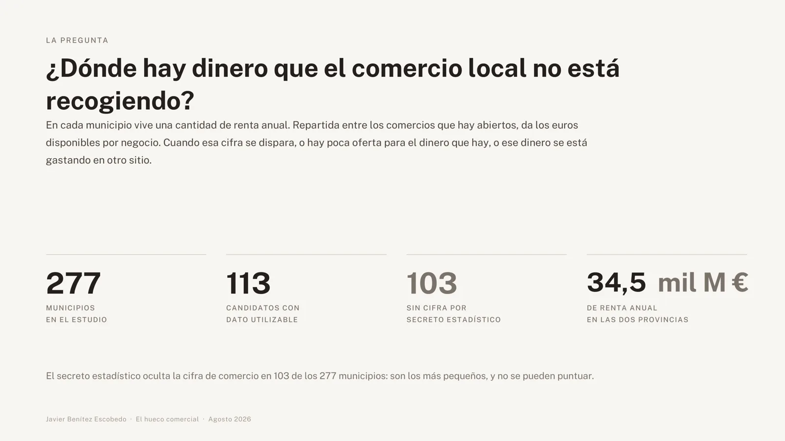
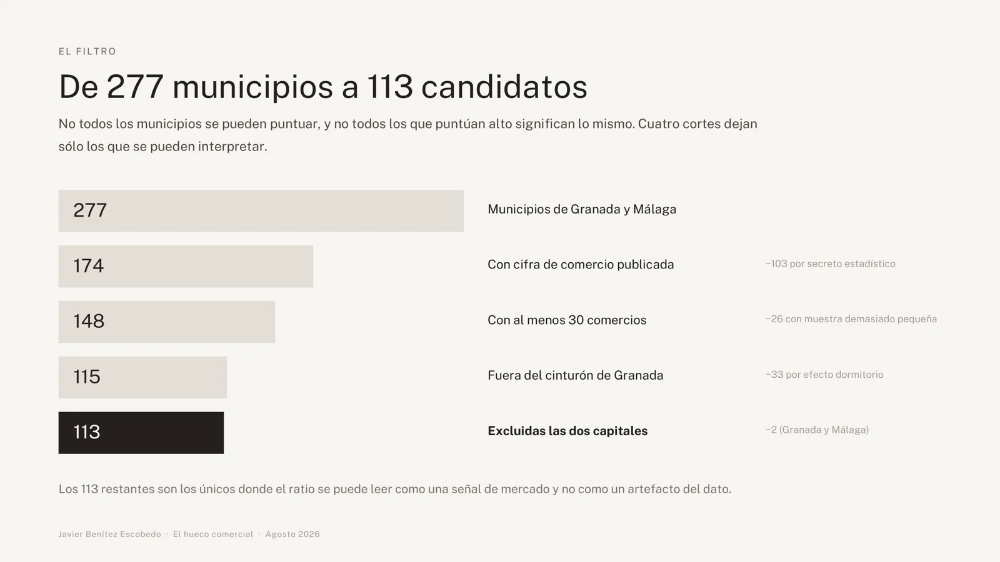
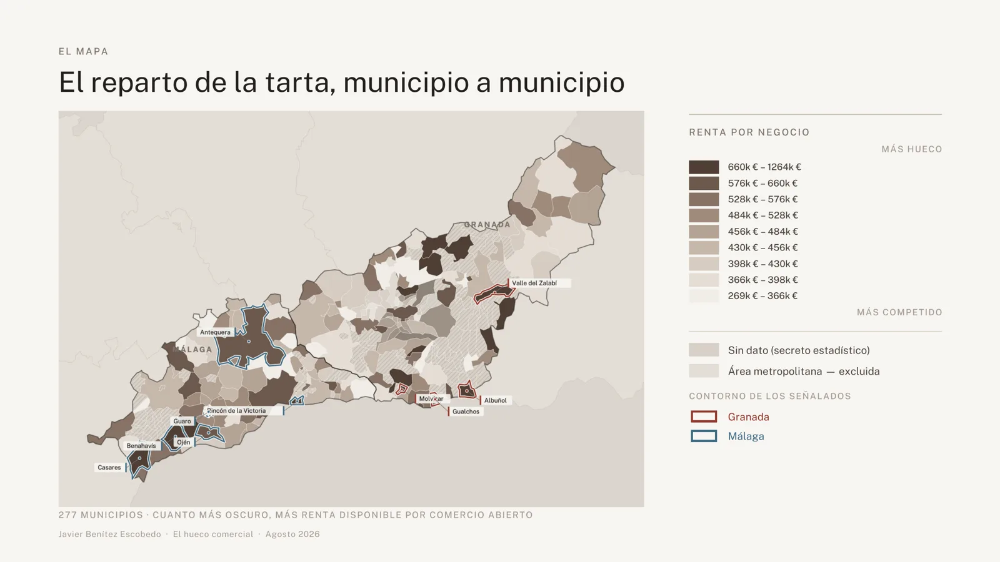
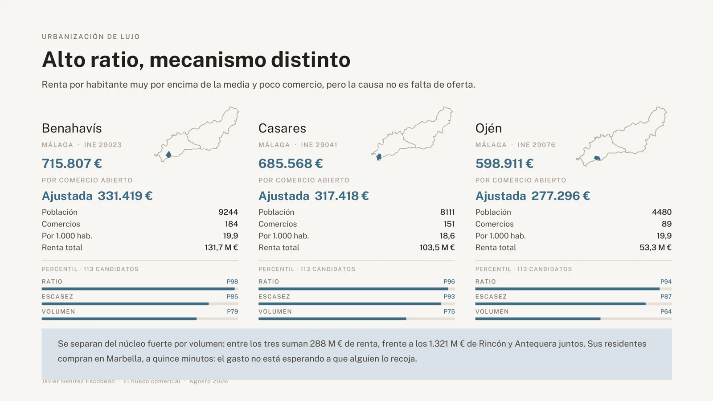
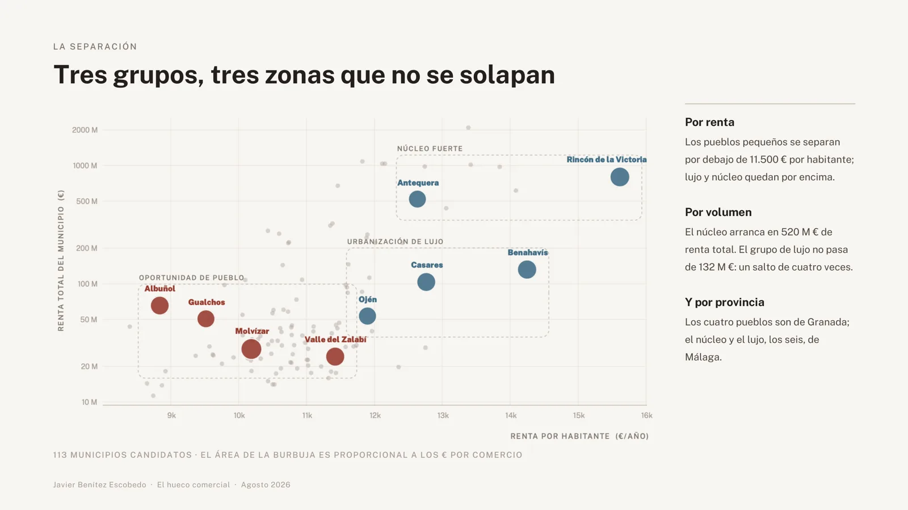
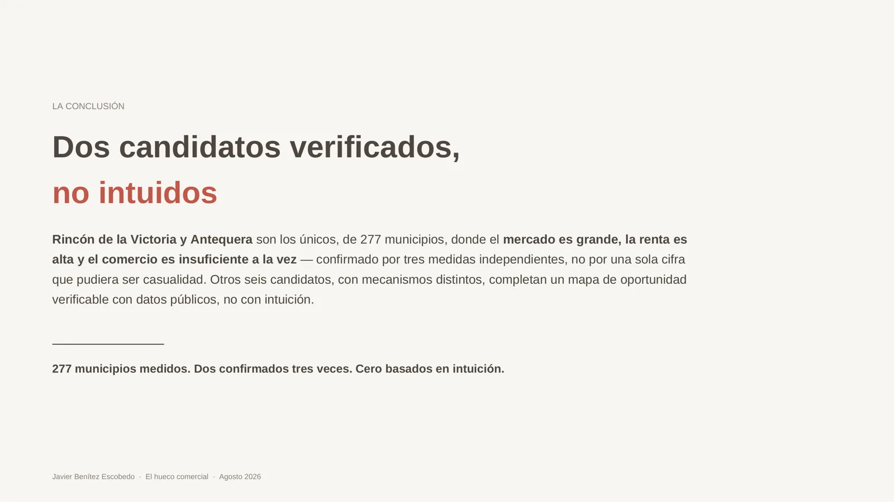

277
municipios en el estudio
113
candidatos con dato utilizable
103
sin cifra por secreto estadístico
34,5 mil M €
de renta anual en las dos provincias
La pregunta
¿Dónde hay dinero que el comercio local no está recogiendo?
En cada municipio vive una cantidad de renta anual. Repartida entre los comercios abiertos da los euros disponibles por negocio.
Cuando esa cifra se dispara, o hay poca oferta para el dinero que hay, o ese dinero se está gastando en otro sitio. Para quién: quien decide dónde abrir un negocio o una franquicia.


La métrica
Renta disponible por negocio.
Fórmula(renta por persona × población) ÷ comercios
Qué señala
Poca oferta para el dinero disponible, o dinero que se marcha a gastar fuera. Un ratio alto es una señal de que hay sitio.
Qué no es
No es facturación ni demanda insatisfecha. No todo ese dinero se gasta en comercio local, y el indicador no dice qué ramas faltan.
Ejemplo real · Molvízar (Granada, INE 18133): renta por persona 10.188 €, población 2.752, renta total 28,0 M €, 32 comercios → 876.168 € por comercio, el ratio más alto de las dos provincias.
El embudo
De 277 a 113 municipios.
- Municipios de Granada y Málagapunto de partida
- Con cifra de comercio publicada−103 por secreto estadístico
- Con al menos 30 comercios−26 con muestra demasiado pequeña
- Fuera del cinturón de Granada−33 por efecto dormitorio
- Excluidas las dos capitales−2 (Granada y Málaga)
Los 113 restantes son los únicos donde el ratio se puede leer como señal de mercado y no como artefacto del dato.


Hallazgos
Tres grupos con el mismo ratio alto y mecanismos distintos.


Núcleo fuerte · confirmado por tres métricas
Mercado grande, ratio alto y menos comercio del que les correspondería.
- Rincón de la Victoria (Málaga): 754.946 € por comercio · ajustada 349.540 € · 51.300 hab. · 1.061 comercios · 20,7 por 1.000 hab. · renta total 801,0 M € · percentiles: ratio P99, escasez P80, volumen P94.
- Antequera (Málaga): 594.516 € · ajustada 275.261 € · 41.178 hab. · 875 comercios · 21,2 por 1.000 hab. · 520,2 M € · ratio P92, escasez P75, volumen P91.
Entre los municipios de más de 25.000 habitantes, son los de menor densidad de comercio (20,7 y 21,2 por 1.000 hab., frente a 23–32 en el resto).
Oportunidad de pueblo
El ratio se dispara porque casi no hay tiendas: cabe un negocio, no una cadena.
Los cuatro de Granada, entre 2.100 y 7.400 habitantes: Molvízar 876.168 € · Valle del Zalabí 690.541 € · Albuñol 666.623 € · Gualchos 587.522 €.
Urbanización de lujo · mecanismo distinto
Renta muy alta y poco comercio, porque sus residentes compran en Marbella, a quince minutos.
No es una fuga de gasto recuperable. Benahavís 715.807 € · Casares 685.568 € · Ojén 598.911 €.


Candidato no confirmable: Guaro (Málaga), 2.307 habitantes y 24,9 M € de renta, pero el INE oculta su número de comercios.
Qué separa a los grupos
Por renta (los pueblos, por debajo de 11.500 € por habitante), por volumen (el núcleo arranca en 520 M € de renta total; el lujo no pasa de 132 M €) y por provincia (los cuatro pueblos son de Granada; núcleo y lujo, de Málaga).


Comprobación
El ajuste del gasto cambia la escala, no el orden.
Según la Encuesta de Presupuestos Familiares del INE (2023), el 46,3 % del gasto medio va a alimentación, vestido, mobiliario, transporte y restauración. Aplicado como factor constante, el ranking no se mueve.
| Provincia | Municipios | Habitantes | Renta | Comercios | Mediana €/comercio | Sin cifra |
|---|---|---|---|---|---|---|
| Granada | 174 | 930.181 | 11,82 mil M € | 21.990 | 485.931 € | 73 (42 %) |
| Málaga | 103 | 1.751.600 | 22,66 mil M € | 44.527 | 456.133 € | 30 (29 %) |
Dashboard interactivo
[PENDIENTE: enlace público de Looker Studio]
Aquí irá el cuadro de mando de Looker Studio incrustado.
Limitaciones
Lo que este análisis no resuelve.
- 103 municipios no se pueden puntuar por secreto estadístico, justo los más pequeños. La lista dice dónde está el mejor hueco entre los que se pueden medir.
- El grupo de lujo no se separa por renta (Benahavís 14.248 €/hab. frente a Rincón 15.614 €): lo que los separa es el mecanismo y la geografía, un juicio de contexto.
- Falta lo que decide el negocio: qué ramas faltan, cuánto cuesta un local, cómo se mueve la gente entre municipios.
Cómo usarlo
Un ratio alto señala dónde mirar, no qué abrir.
- Rincón de la Victoria y Antequera: bajar al detalle por rama de actividad.
- Los cuatro pueblos de Granada: comprobar desplazamientos a la cabecera comarcal antes de decidir.
Conclusión
277 municipios medidos. Dos confirmados tres veces. Cero basados en intuición.
Rincón de la Victoria y Antequera son los únicos, de 277 municipios, donde el mercado es grande, la renta es alta y el comercio es insuficiente a la vez, confirmado por tres medidas independientes.

